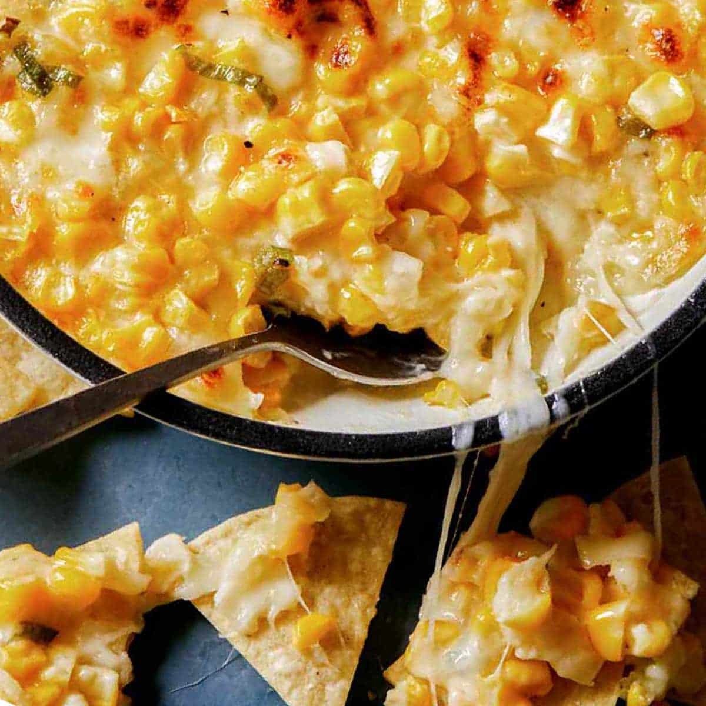

Corn Cheese

Description
Learn how to make a very popular side dish and drinking snack, Korean Corn Cheese. This dish is coated with butter and loaded with cheese, resulting in a delightful, tasty, and comforting flavor. Try it today!
Ingredients
- 1 1/2 cups sweet corn kernels (from a 420 g / 0.9 pounds tin), water drained
- (Optional) 40 g / 1.4 ounces bell peppers (capsicums), diced
- 15 g / 0.5 ounces butter (I used salted butter)
- 1 cup shredded mozzarella cheese
- A few sprinkles of parsley flakes
- 2 1/2 Tbsp mayonnaise
- 1/2 Tbsp sugar (I used raw sugar)
- A few sprinkles of fine sea salt
- A few sprinkles of ground black pepper
Steps to make Delicious Corn Cheese
- Combine the sweet corn, bell peppers and the seasoning sauce in a bowl and mix them well.
- Preheat a skillet over medium-high heat. Add the butter and melt it, then reduce the heat to low. Add the seasoned sweet corn and bell pepper mixture from Step 1 and gently spread it around the skillet.
- Sprinkle the cheese and parsley flakes on top of the corn mixture and cover. Cook it further on the stove until the cheese is melted, about 4 to 5 minutes. Alternatively, you can cook it in the oven at 220°C (428°F) until the cheese is melted (approximately 5 minutes). Use the broiler/grill if you want to brown the cheese.